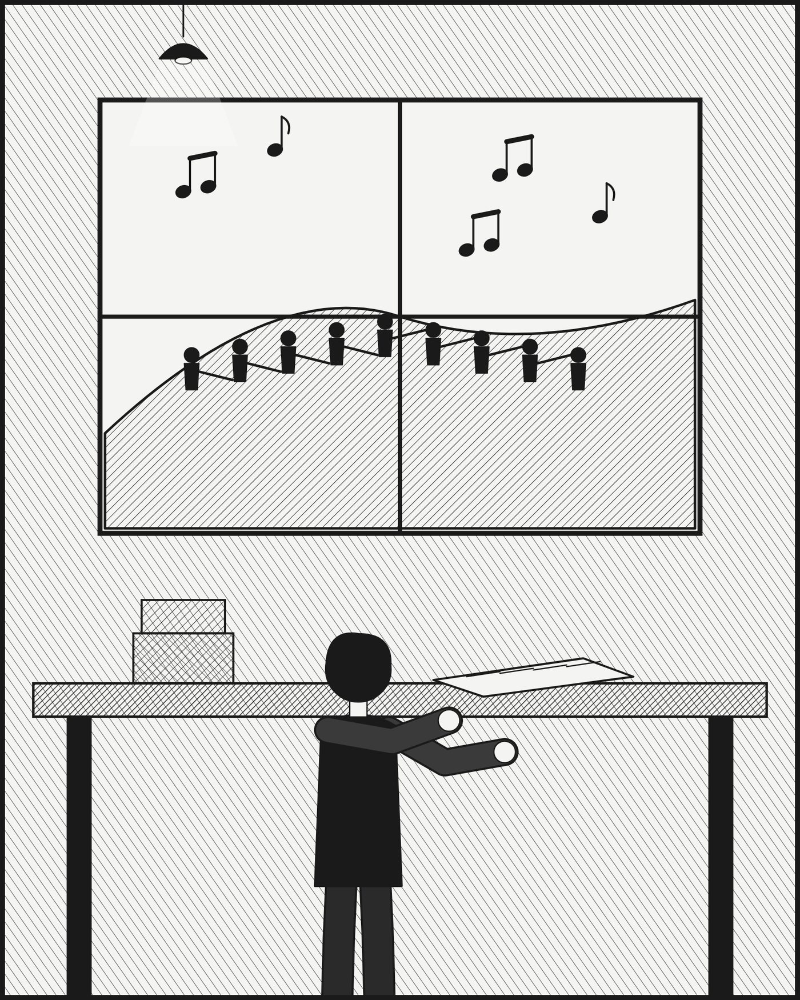

광고·마케팅 업계 뉴스 · 발행인 금로동 기자
콜라 한 병으로 세상에 노래를 가르친 광고인

독자 여러분, 오늘은 광고를 노래로 만든 사람을 소개합니다. 미국의 빌 배커는 광고대행사 맥캔에릭슨에서 코카콜라 광고를 이끈 크리에이티브 디렉터이자, 광고송의 노랫말을 직접 쓴 광고인입니다. 그의 이름을 세계에 알린 작품은 1971년 '힐톱(Hilltop)'이라 불리는 코카콜라 광고입니다. 언덕 위에 모인 젊은이들이 세상에 노래를 가르치고 싶다고 함께 부르는 이 광고는 광고사에서 가장 유명한 장면 가운데 하나로 꼽힙니다. 수십 년 뒤 드라마 '매드맨'의 마지막 장면에 이 광고가 다시 등장하며 화제가 됐고, 그가 2016년 89세로 세상을 떠났을 때 여러 매체는 그를 '세상에 노래를 가르친 광고인'으로 기억했습니다. 미국 광고 명예의 전당에도 이름을 올렸지요. 상품의 장점을 늘어놓기보다 사람들이 함께 흥얼거릴 마음을 파는 것, 그것이 그가 남긴 방식입니다.